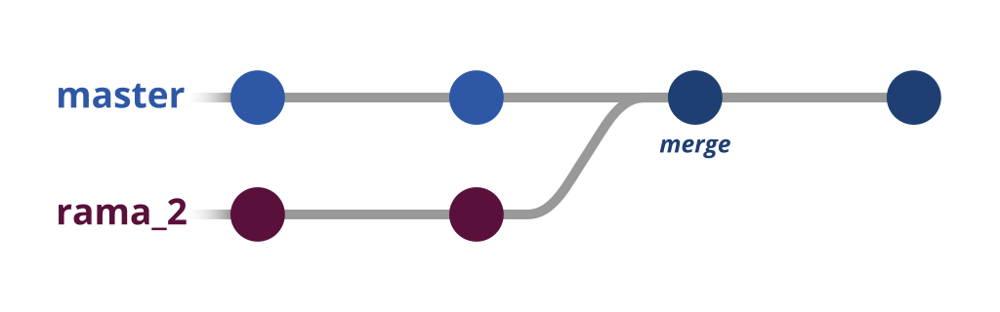
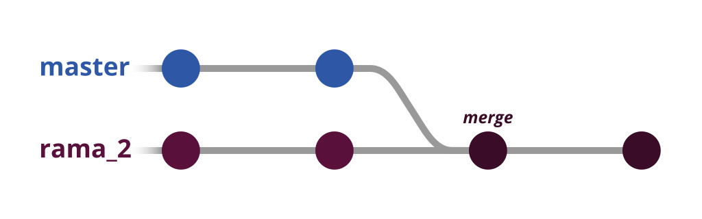

Sección de entrenamiento para usar Git y GitHub con una terminal.
El contenido de aprendizaje se encuentra en Platzi, en la siguiente liga: https://platzi.com/cursos/git-github/
Crear un repositorio nuevo.
Para ello debemos inicializar nuestra terminal de linux o git bash. Después de haber instalado Git (en caso de linux) se indica el siguiente comando dentro del directorio que queremos convertir en repositorio:
git init
Lanzamiento de los primeros cambios
Para lanzar el contenido de nuestro directorio, primero debemos decirle a git que el archivo existe. Para ello ejecutamos el siguiente comando (incluido el punto):
git add .
Con esto le estamos diciendo que busque el directorio actual completo. Por último guardamos los cambios en la rama maestra (llamada master). Esto lo hacemos con un commit, de la siguiente manera:
git commit -m "Primer lanzamiento del sitio"
El atributo -m indica que le vamos a asignar un mensaje al commit, y el texto dentro de las comillas es el mensaje en sí mismo.
Recordemos que un commit es una declaración de cambios de nuestro proyecto en el repositorio. Con él se genera un hash de siete digitos que lo identifica. Entonces podemos decir que cada commit es una versión nueva de nuestro proyecto.
Estos dos comandos se pueden unir en uno sólo siempre y cuando no se hayan creado nuevos archivos en el repositorio. Esto se hace de la siguiente manera:
git commit -am "Primer lanzamiento del sitio"
Lanzamiento del repositorio local al repositorio remoto
Una vez que tenemos nuestros cambios listos y los commits hechos. Es necesario enviarlo al servidor de un sistema de control de versiones como github, gitlab o bitbucket para tenerlos en la nube y poder trabajar con otras peronas.
Para enviarlo al servidor indicamos el siguiete comando en nuestra terminal:
git push -u origin master
el parametro -u origin le indica a la terminal que lo envíe a github y se debe realizar sólo una vez. Master quiere decir que el contenido se almacenará en la rama principal. Después de haber hecho el primer lanzamiento, con escribir "git push" bastará para lanzar los cambios.
Cuando creas un repositorio de Git con "git init". A parte de crear el repositorio, creas un área intermedia entre el espacio de trabajo (tu computadora) y el repositorio. A esta área se le conoce como staging area. Una forma de ilustrar esto es la siguiente:
Ambos sirven para "volver en el tiempo". Para regresar a un punto específico en la historia de nuestro proyecto.
Reset: Sirve para reiniciar el log de cambios a un commit en específico. Si se usa el atributo --hard no se puede volver a los commits subsecuentes.
Checkout: Sirve para observar los archivos y su estado en cualquier commit del log de cambios. Para volver a la versión actual (HEAD) basta con escribir el siguiente comando:
git checkout master
El comando merge sirve para unir una rama del repositorio con otra. Lo más común es unirla a la rama maestra (master). Para unir dos ramas con merge es necesario posicionarse sobre la rama principal con el siguiente comando:
git switch master
Es importante que recuerdes posicionarte sobre tu rama principal, porque la fusión se llevará a cabo sobre ella. En nuestro caso es master.
Una vez posicionados en una de las ramas, debemos aplicar el comando merge para unirlas indicando el nombre de la segunda rama. En este caso, master.
git merge rama_2
Una forma gráfica de ver nuestra fusión es la siguiente:

Pero, ¿por qué es importante posicionarme en la rama master? Es cierto que te puedes posicionar con switch en la rama secundaria (rama_2) en lugar de master. Pero no te lo recomiendo porque ahora tu rama principal dejará de ser master y rama_2 pasará a ser la principal. Puedes ver claramanete como quedaría tu repositorio en la siguiente imagen.

Git es una herramienta muy poderosa. Ya que gracias a ella podemos ver los cambios entre una versión y otra (entre un commit y otro). Aunque también podemos ver un logde todos los cambios hechos desde la creación del repositorio. Para hacer eso, tenemos dos keywords: show y diff.
Show: Sirve para ver el log de cambios desde que se inicializó el repositorio.
Diff: Nos ayuda a ver los cambios efectuados entre un commit y otro. Para ejecutarlo es necesario contar con el hash de los dos commits, recuerda que puedes obtenerlos con "git show". Para usarlo se usa la siguiente sintaxis (sin las comillas):
git diff 'commit_1' 'commit_2'
Un ejemplo real es el siguiente:
git diff e9a7ba0 e8b373a
Recuerda que el orden de los commits es muy importante. Porque si, por ejemplo, pones primero un commit más reciente, y después un commit antiguo, los cambios se mostrarán al revés. Es decir, las líneas añadidas al final apareceran como lineas eliminadas, y viceversa.